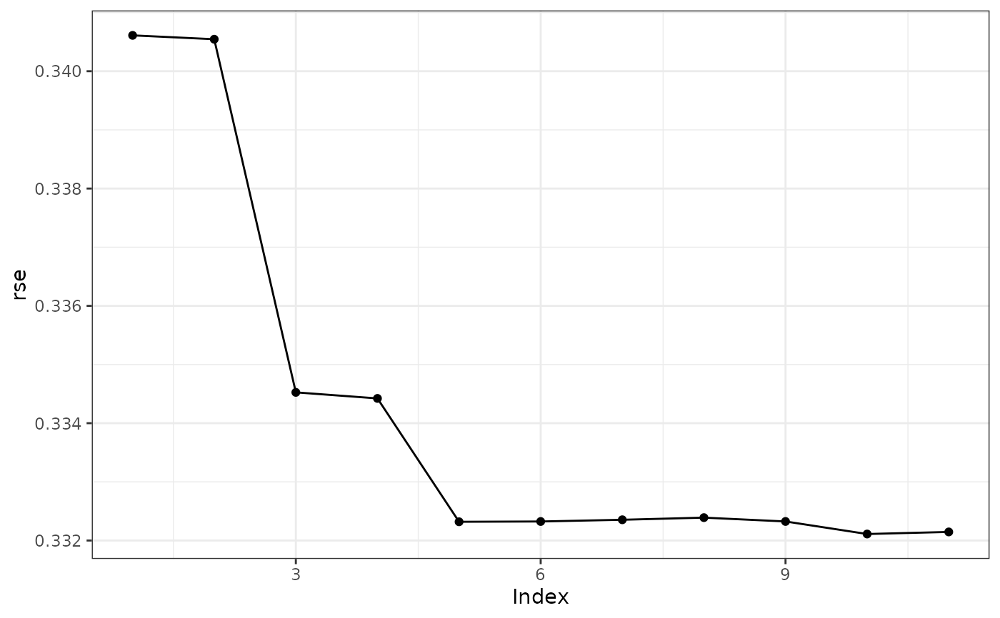

Run the Control Net Reduction Algorithm.
Usage
cnr(x, margin, n_polycoef = 20L, progress = c("cnr", "influence", "none"), ...)Arguments
- x
a
cnr_cnobject- margin
the margins to apply the CNR algorithm to. Passed to
influence_weights.- n_polycoef
the number of polynomial coefficients to use when assessing the influence of each internal knot.
- progress
controls the level of progress messaging.
- ...
not currently used
Details
cnr runs the control net reduction algorithm.
keep will keep the regression fit as part of the cnr\_cp object
for models with up to and including keep fits. For example, if keep =
10 then the resulting cnr\_cnr object will have the regression fit
stored in the first keep + 1 (zero internal knots, one internal knot,
..., keep internal knots) cnr\_cp objects in the list. The
limit on the number of stored regression fits is to keep memory usage down.
See also
cn for defining a control net,
influence_weights for finding the influence of the internal
knots, cpr for the uni-variable version, Control Polygon
Reduction.
Examples
acn <- cn(log10(pdg) ~ btensor(list(day, age)
, df = list(10, 8)
, bknots = list(c(-1, 1), c(44, 53)))
, data = spdg)
cnr0 <- cnr(acn)
#>
|
| | 0%
|
|====== | 9%
|
|============= | 18%
|
|=================== | 27%
|
|========================= | 36%
|
|================================ | 45%
|
|====================================== | 55%
|
|============================================= | 64%
|
|=================================================== | 73%
|
|========================================================= | 82%
|
|================================================================ | 91%
|
|======================================================================| 100%
cnr0
#> A list of control nets
#> List of 11
#> - attr(*, "class")= chr [1:2] "cpr_cnr" "list"
summary(cnr0)
#> dfs loglik rss rse n_iknots1 iknots1 n_iknots2
#> 1 16 -8412.922 2855.385 0.3406112 0 0
#> 2 20 -8406.155 2853.816 0.3405453 0 1
#> 3 25 -7964.400 2753.253 0.3345253 1 0.057623.... 1
#> 4 30 -7954.317 2750.999 0.3344224 1 0.057623.... 2
#> 5 36 -7795.952 2715.846 0.3323194 2 0.057623.... 2
#> 6 42 -7793.308 2715.263 0.3323242 2 0.057623.... 3
#> 7 49 -7791.974 2714.969 0.3323536 3 -0.79187.... 3
#> 8 56 -7791.165 2714.791 0.3323900 4 -0.79187.... 3
#> 9 63 -7782.825 2712.953 0.3323248 5 -0.79187.... 3
#> 10 70 -7763.444 2708.686 0.3321107 6 -0.79187.... 3
#> 11 80 -7761.069 2708.164 0.3321463 6 -0.79187.... 4
#> iknots2 index
#> 1 1
#> 2 47.33451.... 2
#> 3 47.33451.... 3
#> 4 47.33451.... 4
#> 5 47.33451.... 5
#> 6 47.33451.... 6
#> 7 47.33451.... 7
#> 8 47.33451.... 8
#> 9 47.33451.... 9
#> 10 47.33451.... 10
#> 11 47.33451.... 11
plot(cnr0)
